シルバーセカンド開発日誌
■
2023-07-23 (日) 第15回ウディコン、一般審査開始です！▼今回は当然ウディコンのお話！
夏休みの方もいらっしゃると思いますので
ぜひウディコン作品をお楽しみください！
【第15回ウディコン 審査開始！】
ということで第15回も予想以上の作品が集まりました！
最終エントリー【60】番までご応募され、いよいよ『一般審査』が開始です！
審査内容は途中保存も可能で、何回でも書き換えられるので、
もしご協力くださる方は、できる範囲でゆっくり入力していってください。
↓
【WOLF RPGエディターコンテスト公式ページ】
一般審査の締め切りは【8/16(水)の23：59】まで！
結果発表はなんとなく8/19（土）の夜あたりになると思います！
もしあなたが応援したくなったゲームがあれば、ぜひ審査をお願いします！
4作品以上を審査すると審査結果の集計にカウントされますが、
1作品だけの審査でもコメントが届きますので、
ただ作者さまに応援メッセージ送りたい人もよければぜひ！
今年のウディコン作品は、非常にわたくしごとながら、
最初の方からデッキ構築やローグライク（ローグライト）要素を持った作品が
複数来て個人的に大興奮でした。
それぞれジャンルは近くとも、ゲームデザインの差から来る感触の違いを
楽しめているのでとてもゲーム開発の勉強になっています。
もちろん他のジャンルも、ゲーム性が強めな作品も、
印象に残りそうな作品も多くて大喜びです！
皆さま本当にありがとうございます！
【シルバーセカンド作品もセール中！】
ウディコン作品が面白すぎるおかげで私のゲームや
コンテンツは見向きもされなくなりがち！
コンテンツ的に思いっきりバッティングしてしまうので
いつもよりすごい勢いで口座残高が減りがちな時期です。
今ならゲームは
「シルエットノート」\1500→ ￥750（-50％）
「シルフェイド学院物語」 \2000→￥1000（-50％）
「片道勇者プラス」 \500→￥250（-50％）
の3本分で合計￥4000→￥2000（-50％）！
また、Amazonで発売中の電子書籍は、
今回は「旅団世界TRPGリプレイ」シリーズ3冊セットが
￥2772→￥1350（-51％）となっております！
→ ◆全3巻リスト https://amzn.to/3kJmNkB
（Amazonページ）
3巻の人気投票は今年9月頃に集計して公開予定です！
好きなキャラがいる方はぜひ応援の一票を！
なお、旅団世界のリプレイは毎年発売してましたが3巻でいったんお休みです。
しばらくはゲーム開発の方に集中させていただきますが、
ふとTRPGを遊びたくなったときにまた細かく動画など上がるかもしれません！
ちなみにウディタ関連のご支援もいつでも受付中です！
すでにBOOSTまでしてくださった皆さま、本当にありがとうございます！
とても助けになっています！
→ 【ウディタご支援/投げ銭用
ミニ参考資料集ページ】
それでは第15回ウディコン、今年もお楽しみください！
自分も楽しませていただきます！ ■
2023-05-13 (土) RPGツクール素材がウディタでも利用可能に！▼ ゴールデンウィーク中一週間以上も激しい風邪を引いていたり、
元気な時間で作業できたのも非公開のお仕事だったり
ウディタのバグ修正だったりしていたウルフです！
体調のほうはおかげさまで85％くらいまで復調しており、
今はときどきゴホゴホするくらいで、あとは徐々に
調子を戻していくフェイズに入っています。
なのでご報告できることがあまりないなーと思ってたら急なニュースが飛び込んできました！
今回はRPGツクールについての大事件のお話をさせていただきます！
【RPGツクール素材がウディタでも利用可能に！】
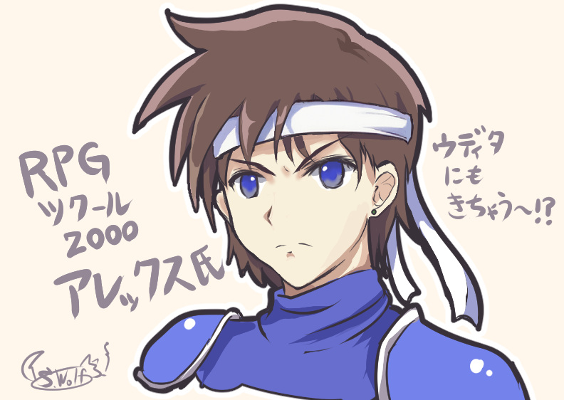
2023年5月11日、ツクール開発部さんのTwitterで驚きの告知が出ました！
なんとRPGツクールシリーズの素材規約が変わり、ツクール以外のプログラムでも利用可能になったのです！
RPGツクール規約 (ｱｰｶｲﾌﾞ)の該当箇所↓
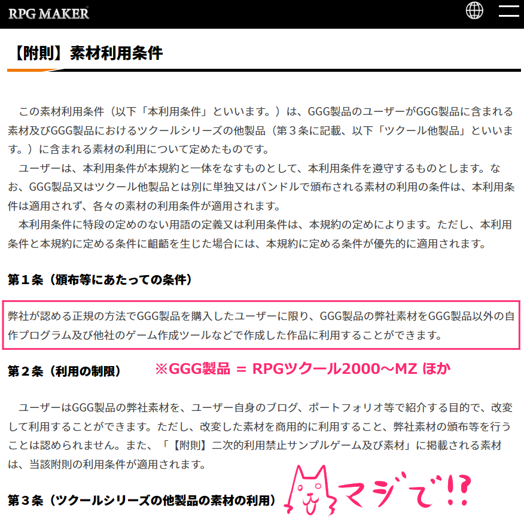
ということで私が何か読み間違えていなければ、
これからはRPGツクールの素材がウディタでも使えてしまいます！
なんてこった！
そのRPGツクール素材、特定のバージョンでは
マップチップが凄く好みだったり、効果音の品質が
全体的にすばらしすぎたりするので、
今後必要になったらじゃんじゃん使おうと思っております。
特に、ウディタを作り始めて一番最初に思っていたのが
「RPGツクールの頃の効果音が使えないのつらすぎる……」
だったので、ここに来てそれが解消されたのはまさに神の恵みです。
そんな判断をしてくださった現在のツクール運営の皆さま、
本当にありがとうございます！
ウディタリアンのみなさんも旧作ツクールをまとめ買いしちゃいたくなる人が
増えるでしょうし、クリエイター側もツクール運営さま側もお互い
ハッピーになれる選択をしてくださったと思います。
【でも画像のフォーマット作り替えが大変？ 実はもう変換ツールが！】
RPGツクール2000、2003、XP、VXの素材に関しては、
実はウディタ公式で六花さんによる
『tkool2WOLF+』
という素材変換ツールが公開されています！
このツールは、RPGツクール素材をドラッグ＆ドロップして
ボタン1つ押すだけでウディタ用素材に手軽に変換できてしまうという優れもの！
今やったところ、Windows11でも起動することを確認済みです。
以下はRPGツクール2000のキャラチップに対して『tkool2WOLF+』を動かした例！
なんと8人1セットのキャラチップが、キャラ方向も再配置された上で
8ファイルに分割されているのが分かります！ すごい便利！
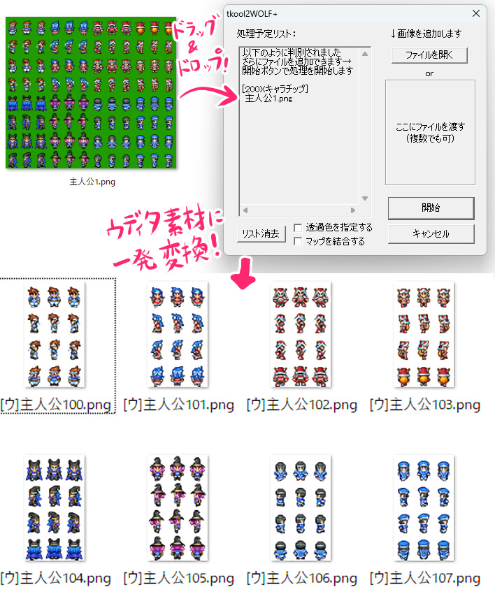
【注意！ ウディコンでは2次創作扱いにならないようご利用ください！】
RPGツクールのキャラクターは、実は一部界隈では
すでに性格や文脈を持ったキャラとして確立してしまったり、
「RPGツクールのキャラクターをウディタで使う」というネタ自体が
すでに注目を集めてしまう要素として使えてしまうので、
ウディコンでそういったご利用をされた場合は
「2次創作扱い」に該当する場合が出てきます。
というのも、2次創作禁止はそもそも「元作品の知名度を利用して有利になる」のを
防ぐ目的でもうけられたルールで、それはツクールそのものに対しても同様です。
なので、ウディコンでツクールネタ用にRPGツクール素材を
使いたくなるのはものすごく分かるのですが、うっかり
「ツクールとの関連を匂わせる」使い方をするのは避けていただけますよう、
どうかお気を付けください！
たとえば、RPGツクールのキャラクターを普通にツクールと
関係ないキャラチップの1つとして使う分にはOKですが、
RPGツクールのサンプルキャラと同じ名前で利用したり、
一部界隈で確立されているツクールキャラのイメージを利用したり、
素材とツクールとの関連を示すのはアウトです。
「RPGツクール2000のタイトル青空と、デフォルトのタイトルBGMを併用して使う」なども
厳しめに見た場合にツクールの2次創作ネタを使っていると
みなされる場合がありますので、あらかじめご了承ください
（でもその場合は「ツクール」という単語や匂わせがなければたぶんグレー扱いです。
知らずに使いましたと言って納得できる場合は仕方ないですよね）
なお、魔王っぽいキャラ絵に「魔王」と名付けたりするのはOKです。
見た目から自然に付けうる名前や、一般名詞を当てはめる分には問題ありません。
ただし、アレックスのキャラチップにアレックスと名付けるのはアウトとします。
アレックスのキャラチップにブライアン（2人目のサンプルキャラ名）と名付けるのは
グレーですがそんなややこしいことを狙ってやるのはお控えください！
といった感じのちょっとした注意点はあるものの、
RPGツクール素材はすばらしいものや使い勝手のよいものも多いので、
購入したあなたのRPGツクールのうち規約にも「使ってよい」と
載っているツクールの素材に関してはぜひうまく活用してください！ ■
2023-01-14 (土) 年始からウディタ修正！+ Switch移植処理速度比較▼【年始からウディタ修正！+Switch移植処理速度比較】
「よーし今年は『片道勇者2』の開発もやっていくぞー！」
と思っていたら年始のリアルイベントや引き続きウディタのバグ修正が盛りだくさんの状況で、
結局まだまだウディタの修正が作業時間の大半を占めています。

今回はウディタのこれまでの修正内容のうち、前回紹介時から追加修正された
「改善点」っぽい部分だけリストアップしてやってる感を出していきたいと思います！
（バグ修正分はナシで）
【ウディタ3 Ver3.101～3.134までの改善点】
【新機能】
●【Game.ini】「SelectedText_to_ClipBoard_F2=」の行を追加。
デフォルトは0です。1にしてゲームを起動すると、F2キーを押すことで
「選択中の選択肢」→「なければマウスカーソル上の文字列ピクチャの
文字列(不透明度1以上)」をクリップボードにコピーできます。
→ 翻訳プレイにも便利です。海外勢の方も
ウディタ製ゲーム遊んでくれるといいですね。
●【Config.exe】iniファイルの保存処理をUnicodeに対応。
日本語以外のロケールで起動した場合は自動で英語になる機能を追加。
●【ダウンロード】POST時のContent-Typeを変更できる裏技を追加。
「POST送信」文のどこでも「<<CONTENT>>～～<<CONTENT_END>>」と
入れると送信時のContent-Typeヘッダを～～部分で上書きできます。
【入力例】**<<CONTENT>>application/json<<CONTENT_END>>～ここにPOST内容～**
※デフォルトでは<<CONTENT>>application/x-www-form-urlencoded<<CONTENT_END>>が入っているのと同じ処理が行われています。
※<<CONTENT>>～<<CONTENT_END>>部分は削除されて送信されます。
→ Content-Typeってもっぱらテキストしか使わないものかと思ったら
json形式も送れるようにすることでVoiceVoxさんなどのボイス再生などにも
使えるとのことで搭載しました。
●【プロ版機能】「実行中メインEv強制中断」機能を追加しました。
「決定キー起動や接触起動、自動起動のイベント」など同時に1つしか
実行できない「メイン実行イベント(仮称)」に対して、
並列イベント内から強制的に「イベント処理中断」させることができます。
- 「ウェイト」や「～～完了までウェイト」系は、ウェイトは中断されますが、同時に実行中の
処理自体は続行されます（動作指定、スクロール、ダウンロード機能など）
- 選択肢コマンドや文字列操作コマンドのキーボード入力、キー入力待ちも中断されます。
- ウェイトありのトランジション中や場所移動中はそもそも並列イベントが
進まないので「実行中メインEv強制中断」は実行できません。
→ イベント処理をいつでも打ち切れるので、うまく使えばイベントスキップ機能などに便利です。
【ゲーム部の改善点】
●【ダウンロード】「保存しない」にチェックを入れても「～_tmp」ファイルが
作られていたので、ファイル保存が不要なときはそもそも「～_tmp」ファイルを生成しないよう修正
●【ダウンロード】無料版で「http(s)://localhost」に接続する場合は
連続で接続してもウェイトが増えないよう修正
→ これによって自PCにPOST送信するようなソフトと連携しやすくなります。
●【起動時】起動に失敗したときなどに勝手にグラフィック表示モードが
「ソフトウェアモード」になる現象が起きにくくなるよう修正。
（現在は起動失敗時、手動で設定を変えてくださいというメッセージが出ます）
→ ときどき修正点に入っているのですがなぜかよく直ってない部分です。
●【起動時】ソフトウェアモードで起動したときはタイトルバーに
【ソフトウェアモード】と追加表示されるよう修正。
（プロ版の場合、「ゲームの基本設定[Pro専用]」のタイトルバー表示設定に
と入れるとソフトウェアモード時にその箇所に表示されます）
●【Config.exe】「グラフィック表示モード」の説明文を以下のように変更。
今となっては3Dモードで動かないパソコンの方が珍しいと思います。
＜3Dモード＞
グラフィックボードを使用して描画。通常はこちらが高速かつ高い描画品質になります。
＜ソフトウェアモード＞
CPUのみで描画するセーフティモード。動作は安定しますが処理速度は遅く、描画も最低品質です。
●【セーブ・ロード処理】「セーブデータへの書き込み」処理で変数・文字列を書き込んだ際、
従来は1つ書き込むたびにファイル保存し直していたのを、
「そのフレーム中のイベント処理が全部終わった時点」と「緑帯エラーが起きた時点」、
または「ゲーム終了時」にまとめて1回だけファイル保存するように効率化
【エディター部の改善点】
●【ゲームデータ作成】文字種の問題で暗号化に失敗したファイルがあった場合は
メッセージボックスを表示してそのファイルを無視するように修正。
また、「暗号化処理はUnicode化されておらず、日本語と半角英数字の
ファイルしか読み込めません」という注意書きも追加しました。
→ Windowsが「日本語」以外の言語環境だとうまく暗号化できないので
このような記述が追加されました。海外の方にもウディタ使ってくださってるなんて緊張します。
●【データベース設定画面】「挿入」「削除」「貼り付け」ボタンを押した後、
そのボタンになるべくそのままフォーカスが戻るよう修正
→ 「挿入」ボタンや「貼り付け」ボタンをEnterで
連打できるようにしたいという意図です。
●【イベント・データ選択欄】コモンイベントウィンドウ、マップイベントウィンドウ、
データベース画面において、中クリックをドラッグしながら上下スライドで
リストボックスをスクロールさせられるように修正
（Editor.ini内の「ListBox_MClickDrag=1」を「0」にすると機能停止できます）
→ Ver2時点ではリスト内で中クリックして出せていた
「スクロールの丸ボタン」が出なくなってしまったのでこちらを搭載しました。
（出る場合もあるようです）
もしスクロールの丸ボタンも出て邪魔になる場合は「0」にしてください。
これを搭載した理由の80％くらいは、私のマウスのホイールが
だいぶ前からまともに機能しなくなっているからです。
どうしてマウスのホイールってすぐダメになっちゃうんでしょうね……。
といった修正が12月後半から1月中旬現在までの内容でした！
バグ修正だけのつもりがなんだかんだで色々いじってますね。
裏ではライブラリ作者さまにお問い合わせしたり色々ドタバタやっております。
【ウディタ用の支援ページ作りました】
そしてこちらはあんまり大した話ではないのですが、BOOTHにウディタ用のご支援ページを作りました。
【ウディタご支援用 ミニ参考資料集ページ(BOOTH)へ】
以前の生放送でいただいたご要望にお応えしたつもりのもので、
参考資料っぽくしてあります。
今は少ないですがコモンイベントと解説資料が載っています。
いつもご支援くださる方、本当にありがとうございます！
【ウディタのSwitch移植時の処理速度比較！】
私もお手伝いさせていただいた『ドラゴノーカ』というゲームがSwitchで発売されました！
処理負荷の改善などでお付き合いがあった都合上、ある程度は詳しいので、
PC版とSwitch版で処理速度の比較をすることにしてみました。
それがこちらの動画です！
色々語っていますが、ざっくりした結論としては、
『Switch上ではVer3の5～6倍くらいのイベント処理時間がかかりそうなので、
移植を狙うならイベント処理時間を2ms以内におさめるのが安全じゃないでしょうか』
という感じでした。
言い換えると、Ver3のウディタは相対的に処理が速くなっているので、
これまでの感覚で作ってると移植できない可能性が出てくるかもよ、って話ですね。
この辺りのデータは今はほとんどの人には影響ない話かもしれませんが、
Switchに限らず他のプラットフォームに移植する可能性が出た場合に
影響してくるので、意識していきたいところです。
ウディタが落ち着いたらゲーム開発に戻りたいのですが、
直近で遊びたいゲームも出てきそうなので、
この機会に色々最新のゲームも遊びたいなと考えています。
直近だと『ファイアーエムブレム エンゲージ』が注目作！
落ち着くタイミングが少なくて話題作を遊ぶチャンスを何度も逃しているので、
今回くらいはせっかくですから楽しみたいですね。 ■
2022-12-10 (土) ウディタ3修正づくしの2週間▼【ウディタ3修正づくしの2週間】
ということで、この2週間はずっとウディタVer3のサポートをしていました！
今もほぼ毎日バグ報告が届いていますが、
私が全然気付かなかった問題をご指摘してくださるのはとても助かっています。
皆さま本当にありがとうございます！ ご報告してくださる積極性がすばらしい！
私なんてバグ見つけても自力で回避できる問題ならあまり報告しない派ですが、
開発側としてはバグは早く見つかった方がいいですからねホント！
おかげさまで普通に使う分にはかなり安定度が高まったと思います。
今回はネタもないのでVer3.101までに修正した内容のまとめ紹介！
【新機能】
直しているついでに入れられそうと思った新機能や、
Ver3.00の修正に対して致命的に抜けていると感じた機能を搭載しました。
＜Game＞
●【変数操作+】「位置」指定の画面外エラーを完全に止める裏技を追加
→ Game.exeと同じ場所に、中味は空でいいので「Game_PosErrorStop.txt」という
ファイルを作るとエラー表示を抑制できます。
●【ピクチャ】PictureWatch機能について、ディレイ指定されたピクチャが
「実際に処理されるタイミング」にもデバッグ文として表示される機能を追加
●【DB操作】 CSV保存で存在しないフォルダを指定した場合、
自動でフォルダが生成されるよう修正
●【文字列操作】「をﾌｧｲﾙ↓に出力」コマンドに
「UTF-8/BOM有[基本]」「UTF-8/BOMなし」のオプションを追加。
出力するUTF-8テキストにBOMの有無を設定します。
（なお、過去に入力されたコマンドは「UTF-8/BOMなし」になっています）
→ CSV出力する場合は「BOM有」にしないとExcelで読めません。
といいますか、もっぱらCSVで出力する人用に実装しました。
私も『片道勇者』のリプレイで使ってるのでないと困る！
●【エフェクト】「キャラ」エフェクトに「移動アニメ強制」コマンドを追加。
ONにするとキャラを強制的に「移動アニメ」状態にできます。
→ 主に「～T.png」や「～TX.png」の画像が設定されたキャラの
ピクセル移動中の移動アニメ切り替え用に用意されました。
基本システムVer3.10で「～T.png」や「～TX.png」キャラのピクセル移動にも対応しています。
＜Editor＞
●【データベース画面】DBウィンドウでCtrl押しながらタイプ切り替えでデータ維持できるように
●【マップ編集】マップ編集画面の全体化状態・画面倍率状態が記憶されるように
●【マップ編集】マップ選択ウィンドウの初期位置・サイズが記憶されるように
→ このあたりのマップ関連ウィンドウの一部も記憶が抜けてました。
●【タイルセット設定画面】「最後に選んでいたタイルセット番号」が最初に出るよう修正
→ 実は昔から最終選択番号を記憶するための変数が入ってたのに
うまく機能していませんでした。どうして……
●【新規データ作成】Editor起動時、Dataフォルダがないときに出てくる
新規データ選択画面の正式版を追加。
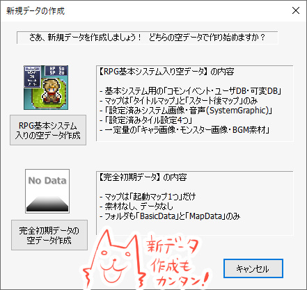
→ Ver3.0X台では仮版だったのでメッセージボックスで質問が出て
「はい・いいえ・キャンセル」から選ぶ形でしたが、3.1で正式版になりました。
【バグ修正】
もしVer3.0X台で何かお困りだった場合は以下をご参照ください。
もしかしたら修正されているかもしれませんので、その場合は最新版を導入してください。
なかった場合はご連絡いただけると助かります！
（でも簡単に再現できたり、原因箇所が分かりやすいデータがない場合は、
作業優先度が下がったり、再現しやすいデータを待ったりする場合がありますのでご容赦ください。
クラッシュ系は原因が分かりにくくてもデバッガですぐ捕まえられることが多いので、クラッシュ再現できるデータは大歓迎です）
＜Gameのバグ修正＞
●【エフェクト】 ピクチャに「角度」を指定している状態だと、
ピクチャエフェクトの「ズーム」が正常に機能しなくなっていたバグを修正
●【変数操作+】 ルビ付きの文字列ピクチャに対して「ピクチャ」の
「画像サイズ（横）」を取得するとルビなしと違う値が出るバグ修正
●【変数操作+】画面外を指定して出るエラーは「テストプレイ時」のみ
「最初の1回だけ」出るように修正(Ver3.02まで)。
●【ピクチャ】ファイル名末尾に_LOOPを付けた動画がループ再生されないバグを修正
●【変数操作+】 「位置」指定の画面外エラーを止める裏技を作っておきました。
1. Game.exeのある場所で右クリック→新規作成→テキストドキュメント でテキストを作成。
2. 1のファイルを「Game_PosErrorStop.txt」に名前変更し、Game.exeと同じ場所に置く。
3. この状態でテストプレイすると、「変数操作+」の「位置」エラーを最初から抑制できます。
●【動作指定】キャラの「動作指定」時のマップセルフ変数の読み込み先が
間違っていたバグを修正
●【エフェクト】ゲーム基本設定で移動幅を「1マス」に設定している状態で
ピクセル移動をすると当たり判定がおかしくなるバグを修正
●【特殊文字】ルビ\r[X,Y]の表示速度が変則的になっていた現象の修正を試みました。
●【キャラの上下描画判定】ループ際の挙動などに問題があったため処理全体を作り直しました。
もし大きな問題が出ていた場合はいったんVer3.05をご利用ください。
※なおプロ版で「ループ有り」マップ、かつ「ズームアウト」すると相変わらず
マップイベント表示の動作が極めて不安定になりますのでご注意ください。
●【マップチップ】▲チップの裏側のキャラチップがスクロールのたびに
チップに隠れたり表示されたりする現象を修正。
●【エフェクト】ピクチャ番号がマイナスのピクチャに対して、エフェクトの「色調変更」で
RGB値を99以下にしたとき反映されていなかったバグを修正。
前の仕様で作っていた方もおられると思いますので、その場合は「ゲーム基本設定」の
「Game.exe動作バージョン調整」を「旧Ver3.00以前の挙動」に変えると
前の挙動のままにできます。
●【変数操作+】エフェクトの「ピクセル移動」を使用して移動させた場合、
キャラの「移動中？」取得が機能していなかったのを修正。
±1ピクセル以上移動できた場合に1を返します。
●【イベント制御】 「キャラ動作指定」で「パターン1～5」を実行しても
反映まで15フレームほど遅れるバグを修正。
すでにこれに合わせて作っていた方もおられると思いますので、
前の挙動のままにしたい方は「旧Ver3.00以前の挙動」に変更してください。
●【システム変数】 「Sys26：選択肢ｳｨﾝﾄﾞｳ X余白」の選択肢余白を入れた分だけ
選択肢ウィンドウが右にずれていってしまうバグを修正。
●【エフェクト】 主人公の『重ねキャラチップ変更』で変更した状態でセーブすると
ロード時にクラッシュするバグ修正
●【エフェクト】スクロールできない画面端が映るようにマップエフェクトのシェイクをすると
画面外が映るタイミングで全てのマップチップが消えて真っ暗になる現象を修正
●【Game.exe】条件は不明ですが高確率で致命的なクラッシュを引き起こす要因が
見つかったので修正してみました。
●【システム文字列・プロ版】 ゲーム内から初回「SysS57：[P]クリップボード内容」に代入しても
読み取り文字列が<<StartClipBoard>>のまま変わらないバグを修正
●【システム文字列・プロ版】 「SysS57：[P]クリップボード内容」の文字列が
Unicodeになっていなかったバグを修正。
●【エフェクト】 マップの端で「マップ」エフェクトすると
瞬間的にマップ画面が黒くなることがあるバグを修正
●【変数操作+】 ピクチャの「マウス重なってる？」の判定が内部的に
1フレーム前のピクチャ座標を使用していたのを修正。
●【DB操作】 CSV保存で存在しないフォルダを指定した場合、自動でフォルダが生成されるよう修正。
●【データベース】データベース内に「×NoData」が多数ある状況でゲームを起動すると、
まれにクラッシュする可能性があるバグを修正
●【デバッグ文】PictureWatch機能について、ディレイ指定されたピクチャが
「実際に処理されるタイミング」にもデバッグ文として表示される機能を追加
●【プロ版機能（プロ版）】PNGスクリーンショットの撮影処理が透過PNGになっていたバグを修正。
いつものPrintScreenで撮れるものと同じにしておきました。
●【システム変数】マップ拡大率100％以外の状況で「Sys122:Map&Evｽﾞｰﾑ時なめらか化(1=YES)」に
1を入れるとタイルの隙間が見えてしまうバグを修正。
ただ隙間の黒い空間はなくなっても隣のチップの色が映り込んでしまうので、
この機能自体は実用的ではない気がしました。「α版」と付けておきます。
●【システム変数】Sys122:Map&Evｽﾞｰﾑ時なめらか化(1=YES) の名前を
Sys122:Map&Evｽﾞｰﾑ時なめらか(1=YES)[α版] に変更
●【デバッグ文】Ver3.082のデバッグ文の修正でデバッグウィンドウを出しながらの
ピクチャ処理時にクラッシュすることがあるバグが出ていたのを修正
●【PNGファイル読込】一部の昔のツールで軽量化したPNG画像を
読み込んだ際に起きる不具合が修正されました。
（ライブラリ作者様に対応していただきました、ありがとうございます！）
●【マップイベント】マップイベントとしてタイル画像を設定したとき、
指定した画像と違うものが表示されることがあるバグを修正
●【文字列操作】 裏技の<<GET_STRING_WIDTH_COUNT>>の
全角英数字と全角記号が1バイトとして認識されるバグを修正
●【文字列操作】 裏技の<<GET_STRING_WIDTH_COUNT>>で
Tab文字コードをカウントさせるとクラッシュするバグを修正。
Tabコードのようにカウントできない文字は0として処理されます。
●【文字列操作】「↓のﾌｧｲﾙをBase64で読込」を繰り返すと
メモリ溢れする可能性があったバグを修正
●【文字列操作】 裏技の<<GET_STRING_WIDTH_COUNT>>において
全角記号￠がまだ半角（1）分として認識されるのを修正
●【起動時】使用したGame.exeのバージョンがEditorのバージョンより
古い場合に出る初期エラーメッセージが文字化けしていたのを修正
●【ゲーム基本設定】 使用フォントをすべて空欄に設定した状態でセーブ＆ロードすると、
デフォルトフォントがMeiryoからMSゴシックに変わるバグを修正
●【暗号化データ】暗号化データ使用時に強引にテストプレイすると出てくる
Log.txtにてメモリリークが検出されるのを修正
（ライブラリ作者様に対応していただきました、ありがとうございます！）
●【フォント】ロード時に特定のフォントがMeiryoに変わってしまうことがあるバグを修正
＜Editorの修正＞
●【エフェクト】エフェクトコマンド入力欄、「画面のスクロール」内の「上」が
見えなくなっているのを修正
●【コマンド入力ウィンドウ】コマンド順を並べ替えている場合、イベント挿入などの
コマンドウィンドウを開いた時になぜか常に文章の表示が最初に出てきて
1番目のコマンド内容と混ざった表示になってしまうバグ修正
●【マップエディタ】 マップが選ばれていない状態でテストプレイを開始しようとすると
マップファイル保存ダイアログが表示されてしまう現象を修正
●【翻訳DLL】「Editor.lang.dll」がうまく読み込まれなくなっていたバグを修正
●【マップエディタ】タイルサイズが正しくないときのエラー文の選択肢表記の中の
「ゲーム解像度を変更する」表記を「タイルサイズを変更する」に修正
●【マップの基本設定】ファイル名の欄で、マップのファイル名の末尾がmかpかsだと
その文字だけ表示されなくなっていたバグ修正。
●【表示スケール】表示スケールが100％以外のときのレイアウト崩れや座標ズレの修正を試みました。
対象は「起動時バナー」「ツールバーアイコン（1.5倍、2倍に変化。ただし今は画像ガビガビ）」
「場所移動先の選択画面ズレ」「画像選択画面のクリック位置ズレ」
「タイル選択時のクリック位置ズレ」です(Ver3.070)
●【場所移動】移動先を選択する画面で環境によってマップが枠外にはみ出ていることがあるバグを修正(Ver3.070)
→ Ver3.071追加 マップの端が選びにくくなっていたのを修正
●【タイルセット設定画面】「最後に選んでいたタイルセット番号」が最初に出るよう修正
（前回「OK」で終了していた場合のみ）
●【データベース】データベースのメモ欄が15行以上になった場合だけ縦スクロールバーが
表示されるよう修正（メモ欄の横幅が広く使えるので、
Ver3から必要ないときはスクロールバーが非表示になります）
●【コモンイベント編集時】 起動直後、コモンイベント編集時に0番以外のコモンイベントに
切り替えてイベントコマンド入力【変数操作+】を開いたとき、
コモンセルフ変数名がコモンイベント0のコモン変数名になっているバグを修正。
●【複数指定画面】コモンイベントの複数コピー画面などで「-1」を入力すると
クラッシュするバグを修正
●【コンバート】コンバート後のデータでエディタがクラッシュする可能性がある要因を修正。
●【イベントエディタ(プロ版)】 WoditorEvCOMMAND_START ～の文字列によるコード貼り付け処理の
文字コードがSJISになっていたのをUnicodeに修正。
（ハートマークなどが入りませんでした）
●【起動処理(プロ版)】Editor.iniにプロテクトキーが記述されているのに
Game.datに暗号化がかかってない場合、起動時にメッセージが出るよう修正。
一部の基本ファイルだけにプロテクトがかかってしまう問題をさけるためです。
●【エディターメイン部(プロ版)】起動時とマップ・マップイベントが編集された状態だと
タイトルバーの『WOLF RPGエディター PRO』の"PRO"表記が消えるバグを修正
●【コモンイベントウィンドウ】変数の数を多くするとコモンイベントエディタ上で
コモンイベントを切り替えたときに時間がかかるようになってしまっていたのを修正
●【ゲームデータ作成】 コピー対象外とするデフォルト拡張子に.clipと.lnkを追加。
●【場所移動】「移動先を見ながら選択」画面でスクロールするとチラ付く問題を修正
●【マップ選択】「マップ選択」ウィンドウの位置が、前回終了時と同じ場所・サイズで配置されるよう修正
●【マップ編集ウィンドウ】前回終了時のマップウィンドウの最大化状態を記憶するよう修正
●【マップ編集ウィンドウ】前回終了時のマップの表示倍率を記憶するよう修正
●【エディターメイン部】ツールバーアイコンを少しだけ調整
●【タイルセット設定】表示スケールが100％以外のときのタイルセット設定で
下部の表示がおかしくなったり通行設定が表示されなくなるバグを修正
●【データベース設定】タイプ設定で文字列の項目を挿入・削除した場合、元々格納されていた
文字列内容がずれてしまうバグを修正（数値では起きませんでした）。
●【複数データ選択】 コモンイベント複数コピーなどデータ範囲を指定する画面で
自動的に数値補正が入る処理を削除しました。
●【画像選択】 マップイベントの画像選択画面などで、画像がないところをダブルクリックしても
「OK」されてしまうバグを修正。
●【マップ選択】 大きいマップがスクロールされた状態で別の小さいマップへ
マップを切り替えたとき、前マップのチップが残ることがあるバグ修正
●【データベース】データを削除したときなどにデータがスクロール中央に来なくなっているバグを修正
●【マップチップ選択】 タイル画像の外を選択すると変な選択のしかたになってしまうバグを修正
●【エディターオプション】「旧ファイル読込言語」の言語の順序が、
実読み込み時に出てくる言語と違っていたのを修正
●【データベース】データ消去時のスクロール挙動をVer3.08以前と同じようになるよう修正
●【データベース】Ctrlを押しながらタイプを切り替えた際、
同じデータ番号を選んだままタイプ変更できるよう修正
●【DB特殊設定(プロ版)】テーマカラーをパーフェクトダークにしたまま
DBの特殊設定を開くと文字が黒のままで一部読めなくなるバグを修正
●【ピクチャ】 自由変形時、コマンド一覧で基準座標が「中央上」と出ていたのを「中央」に修正
●【総合】プロ版と無料版を切り替えたときにエディター起動中の警告が出る現象を修正
●【起動時】新規データを作成するとクラッシュするバグ
●【条件(変数)】 コマンド入力欄のセルフ変数の表示が初回のみ異なる現象を修正
●【キー入力】 コマンド入力欄のセルフ変数の表示が初回のみ異なる現象を修正
＜基本システムの修正＞
●Ver3.09 システム画面の「変更を保存して終了」時の音が2重になっていたのを修正
[コモン132/66行にあった決定音を削除]
●Ver3.10 ピクセル移動処理の「待機アニメON/OFF」を
全てエフェクト「移動アニメ強制 ON/OFF」に変更
[コモン39/「Ver3.10でエフェクトに変更↓」で検索可]
以上です！ まとめるとけっこう多い！
こんな感じで、引き続きいただいたバグの修正続行中です。
【おまけ】
12/24にシルバーセカンドは24周年を迎えます！
余裕がなくて今年は生配信などやっていませんでしたが、
私が元気そうなら今年12/24に1年を振り返る生放送をやりたいと考えております！
今年は半分以上ウディタの修正ばっかりだったので
その話ばかりになるかもしれませんが！
Youtubeチャンネルも持ってますので、
もしよければチャンネル登録お待ちしております！
登録しておくと配信予約を入れたときなどに通知されるそうです。
↓
【SmokingWOLF Youtubeチャンネル】 ■
2022-11-26 (土) ウディタ3＆プロ版、公開！▼【WOLF RPGエディター3＆プロ版 公開！】

ということでついにウディタのバージョン3が公開されました！
半年くらいずっといじりまくっていたおかげで新機能も潜在的なバグもたっぷりです。
【ウディタ3のダウンロード！（公式サイトへ）】
【プロ版販売ページへ！(BOOTH)】
SNS上でのご感想も皆さまありがとうございます！
以下のようなご感想が特に目に入りました。
◆まだウディタ更新されてたの！？
私もそう思いました！
開発が始まった頃は10年くらいで更新をやめているかと思いましたが、
なんだかんだで開発開始から15年以上？経った今までも普通に使えてしまっています。
今も使ってくださっているみなさま、本当にありがとうございます。
◆超はやくなってる！！
比較動画をアップしてくださった方もいらっしゃいましたが
前の5～10倍くらいに速くなってるケースもあって予想以上でした。
最新のプログラム環境（Visual Studio 2022）が強すぎる！
最初からこの速さだと処理最適化をしようとはなかなか思えなかったでしょうから、
これまで2003年の古くて重い環境でガッツリ最適化処理を
作ってこられたのは運がよかったと思います。
重力環境だからこそできた修行！
ただ懸念もありまして、従来のVer2では「ギリギリ処理落ちしない」くらいなら
Switchなどにも移植が可能で、それがいい基準になっていたのですが、
この環境だと数ミリ秒くらいのイベント処理でも他プラットフォームに移植すると
動作がおもおもになってしまう可能性が高いので、
移植まで視野に入れておられる方はくれぐれもご注意ください。
ウディタ3だけは速くなりましたが、他プラットフォームの速度は従来のままです。
直近で『ドラゴノーカ』というゲームに関わった中でのざっくりした私のイメージですが、
デバッグ文の「ValWatch機能（副作用でコモンイベントの加速を停止できる）」を使った状態で
イベント処理時間10～12ms以下くらい、描画時間4ms以内くらいが
一つの限界動作目安になるかもしれません。
**【おまけ】**（2022/11/28追記）
とあるスジから「10000枚くらいの（とても小さい）静止状態の自由変形ピクチャが画面内にあるとSwitchだと10fpsくらいに落ちちゃいますよ！」という情報をいただきました。
「そんなに置かないよ！？」とは思いますがピクチャはいくら小さくても存在するだけで一定の計算量を消費するので、その点はご注意ください。
【プロ版も発売しました！】
最近はウディタに時間をかけるほど私が痩せ細っていってしまう事情から
なるべく最小限しかいじらないようにしようと思ってたんですが、
このままだと維持の面で厳しくなりそうだったので有料版も販売させていただきました。
プロ版は、無料版には入れていない「もともと私専用の機能」を多数搭載している、
本当にプロの人しか喜ばなさそうな機能しか入ってないバージョンです！
これまでしっかり作ってきたデータをよりしっかり守りたいとか、
無料版の範囲以外の画面サイズで作れる、
ダウンロード機能の強化など、すでに作ってる人は喜ばれるかもしれませんが
あんまり触ったことのない人には数点くらいしか使う要素がないかもしれない一本です。
そして評判も固まってない中でプロ版を
もう買ってくださった方もいらっしゃって、本当にありがとうございます！
一番需要がありそうだったウディコンにも使えないですし
けっこうお高いですし、本当にガチの人しか使わなさそうなバージョンだというのに
手に取ってくださって感謝の限りです。本当に需要がほそいので！！
収益としては、「私が(一方的にでも)知ってる方が買ってくださっていそうな感じかな」
くらいの雰囲気ですが、これまで無だったのに比べるとあまりに大きな進歩なので、
これまでよりはウディタの修正に時間をかけられると思います！
とはいえ、ウディタ修正に使った半年近くの生活をカバーする分を目標とすると
ちょっと足りなさそうなので、生活効率的にはこれ一本だと
たぶん飢えていきそうな見込みです。
もともとゲーム開発の余力でやってきたのでそこは全く大丈夫なのですが、
今回分のバグ修正が落ち付いたら、強化されたウディタ3で
急いで自分のゲーム開発に戻ろうと思います。
その過程で、必要に応じて開発に便利な機能も増えるかもしれません。
また、プロ版を買ってくださっただけでなく、BOOSTまで入れてくださった方も
本当にありがとうございます、生きる助けになります！
【公開してみてどうだった？】
相変わらず公開前夜は緊張であまり寝られませんね！
昔よりは落ち着いてリリースを待てるようになったのですが、それでも
リリース直後は普段の7割くらいのパワーしか出せないと思った方がよさそうでした。
それでも、致命的なミスをして100歩後退してしまうようなことがなくてよかったです。
そしてもはや期待通り当然のようにバグがいっぱい出ましたが、
私の知らない部分が問題になって大慌てになってました。
それはこれ！
↓
【高DPI対応】
「高DPI」って何？ って私も思ったのですが、
要するに「すごく高い解像度」の画面のことっぽいです。
で、本件の『対応』とは具体的には、
「アプリの表示スケール（拡大率）をWindows側で
100％以外にしたときのレイアウトをくっきり調整するための対応」
のことっぽいようで、ウディタではVer3になってからスケール125％以上などにしていると
レイアウトが崩れる問題が出てしまいました。
↓
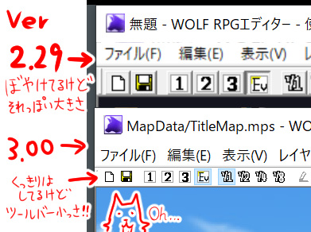
スケール150％の画面。2.29は古すぎるプログラム環境だったからか
自動拡大してくれてたけど3.00はそうじゃないんだ……。
旧版のVer2.29は勝手に「高DPI非対応」モードになってたらしいので
スケールが125％以上でもWindows側で自動で拡大してくれてましたが、
今回はそうじゃなかったので、うまいことレイアウトされなくなっていたようです。
「それじゃあこっちもとりあえず『高DPI非対応』にしよう！」 と色々設定すると
なぜか起動時にすぐクラッシュするしその直し方もよく分からなかったりで、
しょうがないので直接なおす方向でがんばりました。

スケール150％、最新のVer3.07で対応！
Ver3.07の修正で、スケール125％以上にしても
ツールバーなどの「大きさ」だけはそれっぽくなったと思います。
（アイコンは超ガビガビですけど作ってるヒマなかったから
ペイントで拡大しただけなの……そのうち清書します）
他にも、最低限の場所から色々と調整中です。
他にもゲーム中の挙動がおかしくなっているとか、
クラッシュ系のバグなどもちょくちょく出ていてご迷惑をおかけしております。
クラッシュ系のバグは再現可能なデータがあれば高確率で直せますので、
何かあればご連絡いただけると助かります。
引き続き、ウディタ3の修正に一生懸命の期間が続きそうです。
今もウディタを使ってくださっている皆さま、いつも本当にありがとうございます！
【おまけ Ci-enさんちに登録しました】
あまり大きな声では言えないんですがCi-enさんちに登録させていただきました。
なんで大きな声で言えないかっていうと所属枠が全年齢じゃないからです！！
（私が作ってるものの性質上そうなってしまいました。流血はあるし体は切り取るし……）
【SmokingWOLF の Ci-enページ】
※Ci-enにログインしてない人には18歳年齢確認ページが出ますが、内容はこの記事の時点だと全年齢です。後になると大人向け絵などがあるかもしれないので注意！
こちらだと、フォローしてくださると記事の更新があったときに
メールで通知してくれる機能があるらしいので見逃しが少なくなります！
もしすでにアカウントお持ちの方はよければぜひ！ ■
2022-11-12 (土) ウディタ大規模アプデ内容予告7 仕上げ中▼【ウディタ大規模アプデ内容予告7 仕上げ中】
前回言ってたUnicode化は本当にエディターの隅から隅まで
全部いじってなんとか済ませました！！
で、そこからはリリースに向けてここ1週間くらいずっとバグ修正や機能修正をしていました。
ネタがないので今回はその「1週間」でいじった修正点の数々をご紹介します！
小さいのも含めれば全部で130個以上！ 1日18個！
1個数時間かかる難易度のバグ修正から10分で終わる微調整まで様々ですが、
リリース前はこんな勢いでいじっているんですよ。
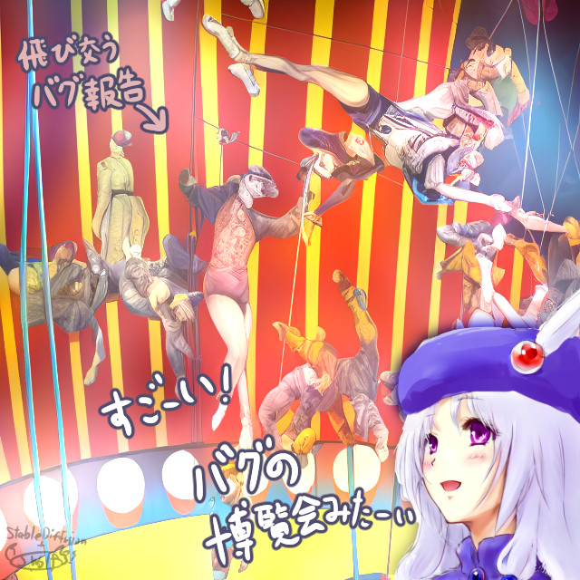
●Game：右上・右下基準のピクチャだけ移動時にX座標がずれて表示されてしまうバグ修正
●Game：Ver2.29モードにしたら変数操作+の「位置」処理でエラー出ないように修正
●Game：Ver2.29モードにしてもタイル関係の処理がずれてたバグ修正
●Game：デバッグウィンドウが文字化けする現象を修正
●Game：古すぎるData.wolfを開こうとしたときのエラーでメッセージボックスが文字化けする現象を修正
●Editor：DB画面で一個消してOK押すとクラッシュするバグ修正
●Game：最初にクリップボード情報が読み込まれそうになったときに確認メッセージが出るよう修正
●Game：セーブデータを読み込み中、変なところでユニコード済みフラグが1になってしまいSJISのままになってしまう場所があるバグを修正
●Game：【DB操作】「50バイト超の『データ名』で名前呼び出し」をするとエラーが発生するバグを修正
●EditorPro：「プロ機能」を編集してＯＫ押しても更新されないバグを修正
●Editor：タイルセット設定の最下部のラインが2つ抜けてるバグ修正
●Editor：遠景として設定したのと別の画像が出てしまうバグ修正
●Editor：Ver3への初期コンバート時、CSVも変換するように修正
●Editor：Ver3への初期コンバート時、「Ver2.29にバージョン調整を切り替えるか」質問を追加
●Editor：タイル設定にて、基本タイルがないときもスクロールできてしまうバグ修正
●Editor/Game：文字列操作の「ファイル読み込み」に文字コードを選べる機能を追加。
旧バージョンから移行した「文字列操作」コマンドは全部文字コード「自動判別」になります。
●Editor：DB操作にてDBタイプ番号の「名前」にチェック付けてプルダウンから選ぶとクラッシュする現象に対応
●Editor：コモンイベントの名前の色コードが右端に見えてしまうのを修正
●Editor：コンバートしたTXT・CSVファイルに全部BOMを付けるように変更
●Game：<<GET_FILENAME_FROM_PICTURE>>をピクチャ0枚のときに使うとクラッシュするバグを修正
●GamePro： マップエフェクトで全然関係ないエフェクトが起動してしまう謎の問題を修正
●Game：コモンイベントが自身を呼び出し続けると265回でクラッシュするバグを修正。
●Game：システム変数143：[読]処理可能ｺﾏﾝﾄﾞ[通常0/プロ版1] を追加
●Editor：ゲームデータ作成時にタイトルの処理がおかしくなるバグを修正
●Game：10年前くらいのVer1.X時代のセーブデータが読めない問題にいくらか対応（昔のものを正しく判別できないので完璧ではありませんが読込成功率はアップ）
●Editor：ピクチャファイル入力欄に見えないスピンボックス分だけ入力ボックスの右側が欠けて見えていたので、目立ちにくくなるよう修正
●Editor：エディターオプションを変更しても反映されないことがあるバグを修正。
●Editor：コンバート時の動作バージョンVer2.29切り替え提案の文章を気付きやすい場所・内容で出るよう変更
●Editor：エディターオプションの遠景の設定を修正。
1枚だけ表示する ループ表示する 表示しない から選べるように。
●Editor：【変数操作+】「その他」の「現在のマップのタイルセット番号」がイベント欄で正しく表示されないバグ修正
●Game：【変数操作+】「マップ外」のイベントIDを取得すると-1でなく0が返されるバグ修正。
その他、Ver2の挙動を再現するよう修正。
●GamePro：sysS57：クリップボード で得た日本語が文字化けして読めないバグを修正
●GamePro：プロ機能で「ゲージ画像だけ」を設定した時、ゲージが表示されてないバグを修正
●Game：回数10万回以上にするとキャラ・ピクチャのシェイク速度が２倍になるバグ修正（正確には数値が動いていないせいで半分しか動いていなかった）
●Game ピクチャエラーだけフルアドレスが出ているのを修正。もとい、緑帯メッセージに絶対アドレスが入っていた場合はEXEまでのアドレスを消して表示するように。
●Game 文字列ピクチャを移動したあとに数フレームかけて消去すると座標ズレが起きるバグ修正
●Editor：背景がないときエラーが無限に出る現象を修正
●Editor：「コモンセルフ使用状況」の項目のずれっぽいのを修正
●Editor：コモンイベント入力コマンドで入力欄などがずれているのをたぶん修正
●Game：<Base64でﾌｧｲﾙ読込>でバイナリファイルを文字列変数に読み込んだ際に文字列変数の最後に必ず改行が入っている現象を修正。
●Game：「フォルダの作成/ファイルコピー/削除」でファイル名に日本語を使うと正常に処理できないバグを修正
●Editor/Pro：マップに変更を加えた後、プロテクト画面とゲーム設定画面、エディターオプションに入ろうとする前にマップ変更を保存するか聞くように変更（保存しない場合は再起動時にデータが消える）
●Editor 条件(変数)の『4変数を連動』を解除した状態で、2つ目以降の条件にチェックを入れてコモンセルフを選択しようとするとコンボボックスの一覧にコモンセルフが表示されないバグを修正
●Editor：コンバート時の最初の質問のはい・いいえが逆になってるバグ修正、はい・いいえの入れ替え時に変更し忘れ
●Editor：コンバート時の最初の質問でキャンセルすると終了できないバグ修正
●Editor：多重起動できるようになってしまっているのを修正
●EditorPro：基本設定Proのファンクションキー設定をOFFにしても次開くとONになってしまうバグを修正
●GamePro：プロテクト入れただけでセーブ→再起動するとクラッシュするバグを修正
●Editor：イベント制御コマンド欄のラベル名の「可」が消えているのを修正
●Editor：DB操作コマンドを入力するときに数値がゼロになるバグを修正
●Editor：再起動時の内部処理で、「前のプロセスが終了するまで次の起動を待つ処理」が機能してなかったので作り直し。
●GamePro：「ファイル削除」に「./」が含まれているとエラーを出すように修正
●Editor：CSVファイルをタイル設定にドラッグ＆ドロップしたときの座標判定がおかしいバグ修正
●Editor：Editor.iniがない場合でもサンプルデータと同じ各ウィンドウ座標の初期値を入れるよう修正。
●Editor：Dataフォルダが存在しないときは、起動時に空の状態のゲームデータをDataフォルダに作れる処理を作成。これでEditor単体でゲームが作り始められます。
●GamePro：プロ版をちょっと使ったり使わなかったりしたときにセーブデータがクラッシュする不具合がまだ残ってたので修正
●Game：画面サイズを3倍にするとアイコンのY軸に倍率かかってないバグを修正
●Game：キャラ重ねレイヤーは同じサイズにしてくれというエラーが出るように
●Game：最新版のGuruGuruSMF4.dll を使うとPC環境によってはGame.exeが起動しない現象に対応。4.0.6のGuruGuruを使用することでいったん解決。
●Game 他の別名のゲームを開いているときでも多重起動ができなくなっているバグを修正
●GamePro：プロ版使用、かつゲーム設定プロ版で指定できるタイトルバー部分が空だと起動制限に引っかかっていたバグ修正
●Game：画面サイズの最小値を100×100ピクセルに設定。
●Editor：「ゲーム基本設定」にて画面サイズの最小サイズを100未満にしようとすると100に戻される処理を追加。
●GamePro：プロ版で画面サイズ自由設定した後に通常のGame.exeで起動したときに画面サイズが基準画面サイズにならないバグ修正（本来はどれか一番近い解像度が選ばれます）
●Game：文字列操作の裏技に<<GET_MAPEVENT_NAME_FROM_ID>>と<<GET_COMMONEVENT_ID_FROM_NAME>>を追加。
ID→名前取得を<<GET_MAPEVENT_ID_FROM_NAME>>に変更
●Editor：コマンド入力の「チップ処理」で最新版挙動でも2.29以前用の注意メッセージが最初に表示されるバグ修正
●Editor：コマンド入力の「場所移動」で右上の注意書きが全部表示されていないミスを修正
●Game/Editor：システム変数 Sys119：基本画面倍率[1-3] を追加
●Editor/Game：変数操作+の「その他」に「現在マップのマップイベント数」を追加
●Editor：文字列操作 「に↓のファイル内容読込」<UTF-8>を「修正」しようとしたとき、修正画面で「自動文字コード判別」が選ばれてしまうバグ修正
●Editor：データベースエディタの「ファイルの出力」時、【～】が高速点滅している現象を修正
●EditorPro：プロ版コマンドの「ファイル削除」を選んだとき、上の入力欄が「Data/」から始まっていたら「Save/」に切り替わる処理を追加
●マップ縮小表示時に元画面外のイベントが表示されなかったのを修正
●EditorPro：画面サイズの限界に制限が付いてなかった不具合を修正
●Editor：【マップイベントウィンドウ】開いているイベントの座標に「精密」表示を追加。また、半歩上・半歩左による座標補正も加味した座標を表示するよう修正。
●Editor：プロ版かどうか判定するシステム変数がSys142じゃなくてSys143だったミス修正
●Game：横幅に合わせてF9の変数表示の列数が変わるよう修正（F8とF7は縦に超細い画面だと今はどうにもならなさそう）
●GamePro：プロ版でマップのズームをゼロにするとクラッシュするバグ修正
●Game：マップのズームの拡大率0～マイナスは仕様外なのでマップのズームは最低1％以上になるように修正
（ズームマイナス時と同等の表現ができる機能の搭載を検討対象に。マップ+EV部分だけ取得できるスクショ機能とか作るの難しいけどいつか欲しいですね）
●EditorPro：ゲームデータ作成時アイコン以外のファイルや存在しないファイルを設定したときにエラーが出るよう修正
●EditorPro：ゲームデータ作成時のアイコンは32x32を強く推奨と記載
●Editor：何も入力せずにMAPを新規作成したらエディターが落ちるバグ修正
●Editor：「マップ設定画面」で「マップ200x200以上は（エディタで）表示できない」という表記を削除
●Editor：マップエディタ上で出るマップチップ一覧の縦軸を伸ばしても描画更新されないバグ修正
●Editor：「エフェクト」の「間隔」表記が全部出てないのを修正
●Editor：「キー入力の許可」欄の各パーツの文字幅を調整
●Editor：「自動キー入力」欄で「マウス」の「位置」をクリックして「マウス」以外に切り替えると「X」表記だけ残るバグ修正
●Editor：「変数呼び出し値一覧」表記にカッコが1個多いミスを修正
●Editor：ゲームデータ作成時、「フォルダ別暗号化」をしたときにアクセス制限がかかって止まる状況があるのを修正
●Editor：エフェクト→マップ→ズームの拡大率欄の名前を「拡大率」→「拡%/1-」にして1以上と分かるように変更。
●Editor：各コマンド入力タブに灰色部分が発生していたのを修正
●EditorPro：「起動後」にプロテクトキー変更しても再起動しないバグを修正
●Editor：無料版で旧コモンを読み込むと文字化けする現象を修正。
●Editor：旧バージョンの外部ファイルや非UnicodeのCSVを読み込んだとき、言語について言及する処理を追加
●Editor：他にコモンが存在するデータで、未編集の真っ白のコモンイベントでキャンセルを押して閉じると「CommonEvent.datファイルがありません」みたいな警告文が出る現象に対応
●Game：ソフトウェアモードにおいて何か表示→エフェクトを連打するとスプライトが無限に増えるバグ修正
●GamePro：スクリーンショットに限り、3Dモードでも表示→エフェクトを連打するとスプライトが無限に増えるバグ修正
●Game：ピクチャエフェクトの変換系をかけたあとに「変換系のみ全解除」をするとスプライトが無限に増えるバグ修正
●Editor：マニュアルを開く を オンラインマニュアルを開く に変更。
●Editor：入力済みの文字列操作をスペースキーで編集しようとするとエディターが落ちるバグ修正
●Editor：特定内容のイベントの挿入処理が入っているとアサートエラーが出る現象を修正 + そのコマンドを「修正」時にもエラーが出る現象を修正
●Editor：いつの間にか起動時のゲージが30％くらいで終わるようになってたので長さを調整
●EditorPro：ゲームデータの作成時にアサートエラーが出るのを修正
●Editor：ファイル選択画面でダブルクリックしたときのおかしな挙動を修正
●Editor：パーティ画像欄の「読込」でタイルセットが選べてしまう問題を修正
●Editor：マップエディターのイベント選択時の赤▽が出てなかったのを修正
●EditorPro：デバッグ用のランタイムライブラリが入ったまま（アサートエラーが出る）だったのを修正
●Editor：コンバート時、320x240の画面サイズを移行したなら画面倍率2倍フラグを立てる処理を追加
●Ediotr：コンバート時テキストデータを拡張子「.mps」にしているとエラーのメッセージボックスがダイアログの裏に出てしまって気付きにくい問題を修正
●Editor：コモンイベントの挿入コマンドを編集しようとすると引数の値が初期化されるバグ修正
●Game：9180007～8の主人公のピクセル補正XYが取得できないバグを修正
●Game：9100007～8によるイベントのピクセル補正XY代入が主人公と違う挙動になっていたバグ修正
●Game：セーブデータが保存できなかったときにエラーが出るように修正
●Editor：変数操作+・条件(変数）・条件（文字列)でコモンセルフ変数の名前を変えても更新されない現象を修正
●Editor：イベントコマンド入力ウィンドウの切り替え時にもコモンセルフ変数名更新処理を追加
●Editor：ピクセル移動は主人公だけがピクセル移動するのが前提でイベント側には使わないこと前提なので「ピクセル移動（α版）」という記載に変更
●Game：テストプレイ時のみ画像読み込み時のメモリ解放をしていなかったバグを修正
●Game：Sys30:プレイ時間（ミリ秒）が 同じフレーム中でもちゃんと数値増えるように + 同フレーム中なら1000超えするように変更（同フレーム中での引き算で面倒臭くならないように）
●Game：「動作指定」内の変数は、動作指定開始前に全変換して格納するよう修正、コモンセルフも使用可能に
●Editor：コモンイベント時、「動作指定」でコモンセルフ変数を選んで修正すると対象キャラ欄がおかしくなるバグ修正
●Editor：「Sys119：基本画面倍率[1-3]」の名前が「[読]タイルサイズ」になってるミス修正
●Game：ピクセル補正値が1以上になっているイベントが「動作完了までウェイト」オンの動作指定でジャンプすると動作が進まなくなるバグ修正
●GamePro： JPGスクリーンショット機能の保存品質を調整
●GamePro：マップズームアウト機能周りのバグの影響でプロ版でゲームが起動できなくなるバグを修正
●Game：通常ピクチャの角度が0以外の時になぜか2ピクセル下に表示されてしまうバグを修正
●Game：4択の条件分岐へのコモンイベント最適化処理が未実装だったのを修正
●Game：8択など想定外の数の条件分岐があるとゲーム起動時の最適化でクラッシュする問題に対応
●Editor：「DB操作」で上部または下部の「変数」にチェックを入れて100万以上の値を入れても次に開いた時チェックが外れているバグを修正
●Editor：「DB操作」で存在しないタイプ番号を指定し、データ名や項目に空欄の「名前」を指定して入力しようとするとクラッシュするバグ修正（Ver2.29から存在）
●GamePro：スクリーンショットを撮り直してピクチャ表示し直しても画像が更新されない問題を修正。スクリーンショットを撮った時点で全ピクチャの中味を最新画像に更新する仕様に。
●Game：「ゲーム基本設定」の『文字列表示(文字列ピクチャ)微調整』で『横方向の字詰め(ﾋﾟｸｾﾙ)』を0以外にしているゲームをVer3.00に持ってくると文字幅がズレるバグを修正。
中味がUTF-8になって3バイトになってたので字詰めも2→3バイト分になっているバグでした。
●Game：未UTF-8化のバージョンをGame.exeだけ差し替えて実行したとき、ゲーム基本設定のバージョン調整が「最新」だった場合は自動で「Ver2.29」として処理するよう修正
|
よく見れば急に実装された新機能も混ざっています。
たとえば、
「Ver3のエディタにUTF-8文字コード化するコンバート機能は付けたけど
プレイヤーさん側のセーブフォルダ内にあるデータはコンバートできないわけで、
そこにはSJIS文字コードのも混ざってるから結局ファイル読み込みするなら
文字コード自動判別機能を作らなきゃいけないじゃないかー！！」
といって泣きながら「文字列操作」の「ファイル読込」機能に
「文字コード自動判別機能」を付けたりしてました。
でもUTF-8とマルチバイト文字の確実な判別ってね！
Googleさんにもできないんですよ！！
あと他の新機能、個人的な一押しは
「DataフォルダがなくてもEditor.exeを実行すれば空データを作ってくれる機能」
ですね！ 面倒臭いときはDataフォルダ消してEditor起動すればとりあえずなにかができます！
ファイルをEXE内に内蔵したり出したりできる方法を学んだのでこれから色々できます。
ひとまず今月中の公開を目指して引き続き全力で修正していきますので
公開をお楽しみに！ あと2週間以内には出したいです。 ■
2022-10-29 (土) ウディタ大規模アプデ内容予告6 Unicode化▼
ということでウディタの大規模アップデート作業、今は超地味で超コストが高いものの
いちおう世界展開にも影響する部分、『Unicode化』を進めています！
「Unicodeってなに！？」 と思われるかもしれませんが、
もともとウディタの内部は地域ごとに作られた「マルチバイト文字」というので動いていまして、
日本ならマルチバイトの『シフトJIS（SJISとも言います）』と呼ばれる文字コードで動いていました。
これは海外だともちろん違う文字コードになっており、中国語の簡体字なら「GB2312」、
繁体字なら「BIG5」とか色々あるため、文字コード1個しか指定できなかった
これまでのウディタでは、同じゲーム画面内では
2つ以上の言語が同時に表示できないようになっていたのです。
さらに言うとWOLF RPGエディターは「シフトJIS」用のエディタ + ゲーム動作アプリなので、
海外言語のOSでゲームやエディタを開くと部分的に文字化けします。
さらにはエディタで中国語の文字なども入れることができなかったので、
海外展開されている最先鋭の人たちは移植の際にお困りになりがちでした（私も）。
ということで今回、大規模更新のついでにGame.exeやEditor.exe内で扱うコードを
世界で使える文字コードである「Unicode」にしてしまおう！
というのが大きな目標の一つとなりました。
大部分の皆さんへの恩恵が地味すぎる割にコストが莫大な部分ですが、
ここを逃すと一生見て見ぬフリを続けそうだったので！！
あと私が裏でどれだけローカライズ関係で言語周りのお問い合わせを
これまでヒィヒィいいながらサポートしなければならなかったかを考えれば、
私にとってはむしろここで苦労する方が人生の総コストで見れば安上がりです！
そんなわけでVer3からは、ゲーム部分は「UTF-8」、
エディタ部分は「ワイド文字（たぶんUTF-16？ でもファイルはゲーム用に全てUTF-8です）」
で動くようになります。いまそのための修正を行っています。
【Unicode化でどんな面がよくなるの？】
ではUnicode化で皆さんにどんな恩恵があるかというと、以下のような点です。
●変わった記号が使えるようになる。
↓タイトルバーにも♥が使用可能！ メッセージ内に記号も使用可能！（フォントに入ってるもののみ）
要するに、フォントに入っている文字なら何でも使えるようになります。
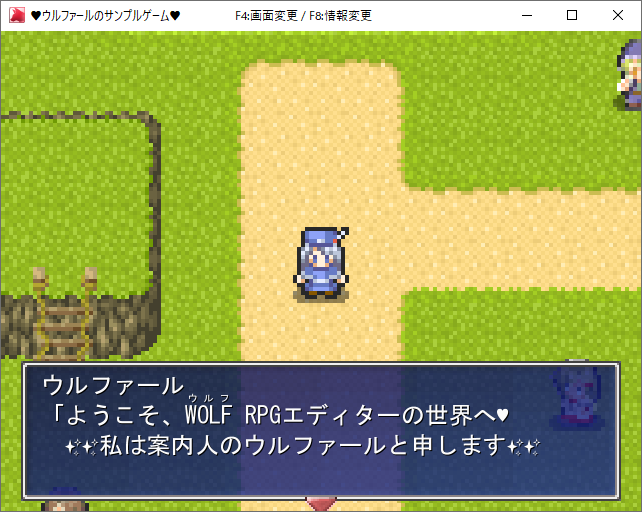
あまり見ない媚び媚びウルファール。
●1ゲームデータ内で言語切り替えが可能になる。
かなりうまく作らないといけませんが、
文字列のほとんどをDB内に書いておけばCSVファイル読み込みで言語を変えたり、
言語別のマップを作っておいて切り替えられるようにしておけば
1ゲーム内で言語の切り替えをさせることも可能です。
●海外展開するときなどに、エディタ上から直接
中国語などを入れられるようになる。
これまでは日本語OSで起動すると、文章欄には「日本語」しか入れられなかったので、
中国語簡体字へのローカライズが困難でした。
ですがこれからはどんな文字でも入るので、
ただでさえ少ない対象人数の中のさらに何％だよって話になりますが、
現在の海外展開先の主流の一つである「中国語」へのローカライズもラクになります！
●海外のOSでもエディタが文字化けせずに使える。
かつゲーム内で確実に海外語の文字が出せる。
私にとって地味に大きい部分です。海外の人からの連絡で
「これこれこうしたいんだけど文字がうまく出せないんです！」
というお問い合わせが殺到することがたぶんなくなります。
またロシア語など、これまでゲーム内で表示すらできなかった言語も入れられるようになります。
だいぶ昔、ドイツの方に「ウディタは海外言語に対応してないのごめんね」って言ったら
（SmokingWOLFなので）「タバコの吸いすぎで死んじゃえ！」って
お返事をいただいてしまったり、台湾の方からのお問い合わせで
うまく文字が出せなくて何度も泣きそうになったりなど
色んな経験をしてきましたが、これからは多少安心です。
●別言語のセーブデータと共存しやすい。
文字コード自体はどの言語でも共通になるので、
セーブデータの共存がしやすくなります。
とはいえ、アイテム名やプレイヤー名が、
選択中のフォントに対応してない言語のものだと
ゲーム内で表示しようとしても文字化けしてしまいます！
【全言語対応フォント】などを入れてるならいいんですけれど、
なかなか数がないんですよね。
可能なら、「オンラインプレイヤー表示」の部分などには
全言語対応のフォントを入れたいところです。
あと私にとっては、『片道勇者2』のオンラインプレイヤーの処理を
言語別にいちいち分けなくてよくなるので助かります。
（『片道勇者(プラス)』では日本語と英語で接続先もサーバプログラムも変えていました）
●ファイルが日本語のままでも海外で動作する！(？)
これは全言語を試せてないので確定したことが言えませんが、
ロケール（OS言語）を「中国語の繁体字」にした状態でも、
暗号化された「あああ.txt」ファイル（日本語ファイル）を
ゲーム内から読み込めるようになっていることが確認できたので、
日本語ファイル名が混ざっていても海外OSで普通にゲームが動作すると思われます。
ファイル名は本来は「英数字のみ」が推奨で、
これまではそうしておかないと海外版が安定動作しなかったんですが、
これからは日本語ファイルが混ざっていてもそのまま出せるかもしれません。
それでも英数字以外のファイル名はあんまり推奨しませんが！
【ゲーム開発者がUnicode化でやるべきことはある？】
Unicodeに変わるにあたってユーザの方が何をすればいいかですが、
基本的には何もしなくても問題ないようにするつもりです。
メリットをあんまり感じにくいUnicode化で大きいご負担をおかけするのもアレなので
低負担で移行できるサポートをご用意します。
●Ver3のエディタを起動したとき、一通りのファイルを
全変換できるコンバート画面が開くように！
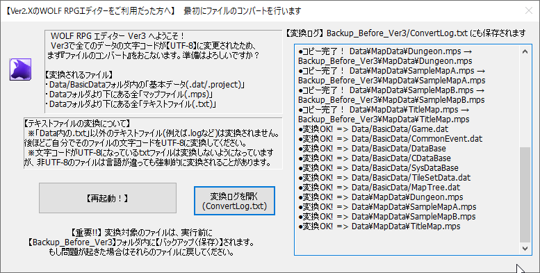
Ver2以前のゲームデータをVer3のエディタで開いたら
最初にコンバート画面が表示されます。
ここで文字コードを全変換します。
ファイルの変換対象は「コモンイベントやDBなどの基本データ」、
「Dataフォルダ内の全.mps（マップ）ファイル」、
「Dataフォルダ内の全.txtファイル」です。
※ただし、txt拡張子以外のファイルはスルーされてしまうので、
もし.logなどの他の拡張子のテキストファイルが使われてるなら
自力でUTF-8型に変換していただく必要がございます。
Windowsの「メモ帳」で名前を付けて保存し直すと文字コードを選び直せます。
いちおう安全のために全部まとめて変換しているものの、
実はtxtファイル以外は、Ver2のままのデータを
Ver3用に変換せずともそのまま読み込むことができます。
（.datファイルは、内部にUTF-8済みかどうかのフラグを持っているので自動で区別されます）
●Game.exeを差し替えるだけでも動作するように。
Ver3のGame.exeは過去のゲームデータでも動作します！
旧データも読むようにしたので、Game.exeを差し替えれば、
Ver2のゲームデータでもそのままプレイ可能です。
ただしDXライブラリの更新でウディタの暗号化アルゴリズムが
Ver2.255(2021/2/27)で根本的に変わってしまったので、
それより前に暗号化されたゲームは読めません。
作者さまの場合は、Ver3のEditor.exeで
ゲームデータを開き直して作り直してくだされば大丈夫です。
また、Game.exeで昔のデータを開いたときの挙動ですが、
「文字列操作」コマンドのファイル入出力で出せるtxtファイルも、
【Ver2の旧データだと認識されると、前のSJIS文字コードのまま読み書き】し、
【「Ver3に変換済み」なら「全てのtxtファイルをUTF-8で入出力」】します。
一方、「DB操作」で出せるCSVファイルは新旧にかかわらず「UTF-8」型で出力されるようになります。
ただ読み込み自体は、SJIS版と新しいUTF-8版を自動判別して
どちらもゲーム内で読める文字として読み込めるようになっているので安心です。
（Excelで保存されたものなら、CSVファイル内のフラグを認識して
UTF-8版とSJIS版の文字コードを区別できます）
と複雑なことを言っていますが、要するに
「Ver3のGame.exeは、古いゲームデータでもファイル入出力はなるべく
これまで通り動作するように読み書きされるようになっています」
ということです。
Ver2.255(2021/2/27)で暗号化された去年以降のゲームなら、
Game.exeだけ差し替えしてもたぶん動くと思います。
●過去のセーブデータもちゃんと使用可能。
Ver2時点のセーブデータもしっかり読めるようにしておきました。
Ver2のセーブだと認識されると、内部文字コードを
自動でUTF-8に変換して読み込みます。
要するにこちらも利用者の方はほぼ何も気にせず使えるということです！
私は気にするところがいっぱいですが！
プレイヤーの方が100時間以上遊んだセーブデータなどもあるわけで、
今後もちゃんとそのまま使いたいですものね。
【今後】
ゲーム側は前々からUTF-8化するための準備を内部に仕込んであったので
だいぶラクにUnicode化できました。あとはバグ探しのみです。
が、問題はエディタ側！
エディタ側はほぼ全体にわたって、すみからすみまでオーバーホールが必要な状況です。
Unicodeモードにしただけでコンパイルエラーが4000件も出る！
が、それはもう解決して、起動できるところまでは行けました。
というのも今回の作業においてはプログラミングソフトの
「Visual Studio 2022」のサポート機能がすごい優秀で、
構文エラーや型エラーがすごい勢いで直せていて
非常に高効率で作業できているので、
ここでもプログラミング環境を最新にした効果が出ています。
Visual Studio 2003でやってたら2ヶ月でも終わらなさそうなのが
ほんの数日でコンパイル成功までいけましたからね！ 最低10倍速！
こんなソフトがタダで使えるようにしてくれているMicrosoftさんに感謝です。
ですが「コンパイル時に引っかかるバグ」ならまだいいんですよ！
そこで引っかからない隠れバグがいったい何百件隠れているか、想像も付きません。
ここからはその辺を修正しながら進めていくことになると思います。
そして、最後にいくつか新機能を付けたら一旦Ver3.00としての修正を完了し、
一般公開して、しばらくここまでの変更で増えたであろうバグの修正に
集中する感じでやっていこうと考えております。
また、各種非公開機能やプレミアムな機能が使える「ウディタ3プロ版」も
アーリーアクセスで同時販売予定です。■
2022-10-15 (土) ウディタ大規模アプデの機能 5 ﾋﾟｸﾁｬ&Game.exe▼
引き続き大規模アップデートの機能紹介！
今回も紹介動画を作ったのでぜひご覧ください。6分ほどです。
この動画内で紹介されている新機能や強化内容は以下の通り！
【ピクチャ機能をいろいろ強化！】
●【ピクチャ】 ピクチャへの画面取得機能を実装。
「[1]ファイル読み込み」のファイル名、または
「[2]文字列読み込み時」の文字列変数内に
<SCREENSHOT>と入れると、
「その時点で表示されている画面」をピクチャとして利用できるようになります。
なお、このピクチャ内容はセーブできず、ロード時には消えてしまうため、
一時的なエフェクトとして使うことを考えてみてください。
また動画内では言い忘れていましたが、
この<SCREENSHOT>ピクチャ指定で「表示」をするたび、
<SCREENSHOT>ですでに表示中の他の全ピクチャの画像も更新されます。
つまり、ゲーム内では<SCREENSHOT>は共有の画像であり、
最新の1枚しか保存していません。この点はあらかじめご了承ください。
※なおプロ版ウディタでは
「緑帯なしでスクリーンショットを画像ファイルとして取得できる」
機能が搭載される予定です。
●【ピクチャ】 部分切り出し表示機能を実装。
[1]ファイル読み込みまたは[2]文字列読み込み時に
「<CUT=X10-150-Y40-300>Picture/AAA.jpg」と指定すると、
画像「AAA.jpg」から、X座標10～150ピクセル、
Y座標40～300ピクセルの範囲だけ切り出して表示することができます。
●【ピクチャ】表示する基準位置として「中央上」と「中央下」を新たに実装。
ピクチャ周りに新しい基準座標を入れるのは超面倒だったので
億劫に思ってましたが、あれば私も絶対使うので、とうとう入れさせていただきました。
●【変数操作+】「ピクチャ番号X」の「マウスカーソル重なってる？(1=YES)」機能において、
角度の付いたピクチャでも重なり判定をほぼ正確に取れるよう修正。
斜めになったカードをマウスで選択するときも安心です。
といいますか、まさに『片道勇者2』でその用途で必要になったので搭載しました。
●【ピクチャ】通常ピクチャの「角度」を0以外にした場合でも
縦横の拡大率が異なる状態を維持できるように修正。
なお、文字列ピクチャは今回の修正ですでに
縦横の長さが異なる場合の角度変更が可能です。
【Game.exeの基本性能向上】
●【イベント処理速度】 アルゴリズム改善とプログラム環境の更新により、
コモンイベント内のイベントコマンド処理が大幅に高速化されました。
組み方にもよりますが、一般的な処理ならば
コモンイベント内で平均で従来の2～4倍の速度で
イベント処理が行えるようになるようです。
『ドラゴノーカ』というゲームのSwitch移植時に最適化をがんばった分で最大2倍、
VisualStudioを2003から2022に変えた分で素で2倍くらいになっているようです。
特に、コモンイベント内での「ループと基本的な変数操作」が段違いに速くなりました！
↓
【高速化実例】
コモンイベント内で3万回ループに「Cself0 = 0」を10個入れた、
だいたい30数万回のコマンド処理を毎フレーム実行したときのイベント処理時間が、
ウディタ開発者の環境で
Ver2.294 約36ms → Ver3.00 約1.5ms （20倍以上）
にまで削減できました。
C++ソースコード上では関数1個も読んでない
最適化済みループを実行しているとはいえ速すぎる！
（コンパイル環境変えただけで元の10倍！）
とにかく、コモンイベント内での「変数操作」や「ループ」の処理が
もしかしたらほぼ「無」近くの負荷になっているかもなので、
うまく作ればシミュレーター系のゲームも動かしやすくなると思います。
●【描画速度】 描画速度が平均2倍ほどになりました。
他の人の環境だとどうなるか分かりませんが、
これもコンパイル環境の更新によって
従来のおおよそ半分程度の描画時間になっているようです。
●【ゲーム起動】ゲームの起動を高速化しました。
作者の環境にて、Data.wolf暗号化したサンプルゲームの初期起動時間が、
従来 2.6秒 → 最新版 1.5秒 くらいに早くなりました。
実はプロ版ウディタに、起動時の真っ暗画面の時点で画像とローディングゲージを
表示するおまけ機能を入れようかなと思っていたのですがほぼいらないかも……。
いちおう、入れるだけ入れる予定です。
という感じで、実用的な強化や、より便利になる強化が複数おこなわれています！
特に「ピクチャの切り出し機能」は、DBなどにファイル名として直接、
「<CUT/X40-140/Y50-150>Picture/Face1.png」
と入れるようにするだけでピクチャ処理時に
勝手に顔画像が一部切り出しして表示されるので、
従来のコモンイベント処理をほぼいじらずとも採用できるのが強力です。
【残りの作業】
ここからは仕上げ段階に入りますが、
いまだにまともに入れていないUnicode対応だけで
一ヶ月くらいかかりそうな予感がしているので、
あと一報、二報くらいしたらネタ切れになるかもしれません。
（いちおう、マスク機能などのご紹介もまだ残っています）
Unicode対応は地味で見せ所もない作業ですが、
今やっておくと海外展開など含めてあとあとずっとラクができる部分なので、
がんばれるだけがんばっていきます。
特にこれからも円安が続くようだと、海外にゲームを
輸出していくことも重要になっていきますしね！
そんなわけで、ここからも引き続きやれるペースで進めていきます！■
2022-10-01 (土) ウディタ大規模アプデの機能 4▼
引き続き大規模アップデートの機能紹介！
【ピクチャエフェクトに「変換」系エフェクトを追加！】
エフェクトの「ピクチャ」に「変換」系処理を追加しました。
この件は動画を作りましたのでこちらを見れば一目瞭然です！（2分の映像です）
↓
これらは一瞬で不可逆な変換を行うもので、一度かけた「変換」エフェクトは
そのピクチャが消去されるまで持続します。
つまり、何度も「ぼかし」エフェクトを重ねたりすることができます。
使えるのは今のところ以下の通りです。
- 変換/色相彩度明度
ピクチャの色の方向性・鮮やかさ・明るさを変化させます。
- 変換/モノトーン
ピクチャを指定した色相のモノトーンに変化させます。
- 変換/ぼかし
ピクチャをぼかします、一度にぼかせる量には限界があります。
- 変換/階調反転
ピクチャの色を反転します。2回やると元の色に戻ります
※マニアックですが「レベル補正」(指定範囲A1～A2の明るさ範囲を
指定範囲B1～B2の明るさ範囲に変換）もあったほうが
色々できるので入れようかなと考え中です。
●エフェクト機能がいっぱい増加！
上の分もエフェクトの追加ですが、その他にも便利そうなエフェクト機能が
いっぱい追加されました。
【ピクチャのエフェクト】
- 描画座標シフト2(角度・拡大率反映)
→ 拡大率や角度の影響を受ける「前」のXY座標をシフトさせます。
ウディタ作者は、カードを複数のピクチャを重ねて作るときに便利でした。
（文字や下地などを全て「同じ座標」の「中央」座標で重ねて出した後、
これでシフトさせて文字や絵などの位置合わせをすれば
回転・拡大しても1枚のカードとして動くように見えます）
- 不透明度補正[±]
- 角度補正[±]
- 拡大率補正[±]
このあたりは書いてある通りです。
いつも通り、縦横の拡大率が違うと角度補正は効きません。
- エフェクト全解除
ピクチャエフェクトを全解除できます（解除できるもののみ）。
まとめて消せるのがなかったので便利になります。
- ピクチャのコピー
パラメータや読み込んだ画像が全く同じピクチャを別IDにコピーします。
「カーソルを合わせたときだけ最前線に表示したい」ときなどに便利。
- ピクチャのID移動
指定したピクチャのIDを切り替えられます。
凝り始めるとこのコマンドと似た処理が求められる場面は多く、
従来のウディタでも「消去→別IDで表示」を一瞬で行うことで実現はできましたが、
これからはこのコマンド1つで実行できます。
処理を簡単化、軽量化するのに役立つと思います。
【キャラのエフェクト】
- 不透明度補正[±]
- ｷｬﾗﾁｯﾌﾟを変更
- 高さ変更
- 強制パターン上書[0:ﾅｼ]
キャラチップを「指定したパターン番号」の画像にして停止させます。パターン値はピクチャと同じ分け方です。
- 重ねｷｬﾗﾁｯﾌﾟを変更
以前も紹介しましたが元のキャラチップに最大5枚分、別のキャラチップを重ねられます（つまり全6レイヤーで着せ替えが可能です）。
【エディタ周りの修正・改善】
●イベント編集ウィンドウの検索窓に「置換」機能が追加！
●マップイベントウィンドウに「検索」機能と「行数」機能が追加！
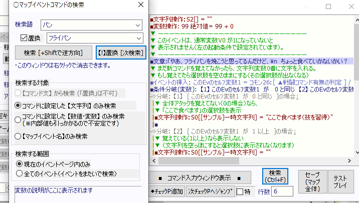
なぜかマップイベント側に付いてなかった検索機能を付けたり、
ついでに「あればいいのに」とたまに思うことが多い機能の
代表である「置換」機能を搭載しました。
●【マップ/コモンイベントウィンドウ】
検索ウィンドウの履歴文字列を10個まで保存するようになりました。
従来は特に履歴が保存されたりしておらず無意味でした。
なんだか履歴が保存できそうな検索欄の入力欄でしたが、
あれ自分でちゃんと実装しないと履歴が入らないんですよ。
●【コモンイベントウィンドウ】コモンイベント編集時、Ctrl+Rの
「直前のイベントに戻る」で前のイベントに戻ったとき、
「行数」も最後の位置に戻るように修正。
実質的にワンボタンで2つの場所を見比べながら作業ができます。
●【ゲームデータ作成】今後は暗号化バージョンが選択可能になります。
今は「Ver2.25～2.29」と「Ver3.00」だけに限られますが、
ゲームデータの暗号化バージョンを選べるようになります。
オンラインアップデートをする際、新旧の暗号化ファイルが混ざるとクラッシュするので、
古い暗号化方式のままにしたいときに利用できます。
（暗号化処理は定期的に新しいものを追加しています）
●【ゲーム基本設定】 「MIDIの再生方式」に
「MIDI音源を使わない[GuruguruSMF.dllも不要に]」を追加しました。
これを選択していると、ゲームデータの作成時にも
GuruguruSMF.dllがコピーされなくなり、
起動時に「GuruguruSMF.dllがないよ」という警告が出なくなります。
さすがに今の時代になるとMIDIを使わない方もいらっしゃいますからね！
【ゲーム側の改善点】
●【座標取得】イベントコマンドで得られる「主人公」の座標が正確になるよう修正しました。
たとえば【変数操作+】による「主人公」の「画面X・Y座標」などです。
おそらくスクロール値も正確になっていると思われます。
→ 従来は「1フレーム前の座標値」が取得されていたため、主人公のキャラチップにピクチャを重ねようとしてもどうやっても1フレーム分ズレる現象がありました。
これは従来、「イベント後に主人公のキー入力や位置情報が更新されていたため」で、キー入力と位置情報を分離し、イベント前に位置情報だけ更新する形にしました。
→ 処理順が変わった都合上、キー入力による「主人公」の移動が動き始めの1フレームだけ遅れることになるので、1フレームしか猶予のない逃走ゲームなどはVer3.00への更新によってクリア不能になる場合がございます。
過去の挙動に戻したい場合は、「ゲーム基本設定」の「Game.exe 動作バージョン調整」で「Ver2.29時点の挙動で動作」に切り替えることで対応できます。
●【エフェクト】キャラ・ピクチャのシェイク回数として10万回以上を指定すると「無限回」になるよう修正
正直ここまでの数値を入れるときは無限にしたいときの方が多いので、無限回になるようにしました。
●【エラー】 緑帯エラーの表示中にF12リセット、あるいは
F11更新（まだF11はクラッシュしやすいです！）できるように修正。
緑帯ループに入ったときにリセットできなくて面倒臭かったので！
●【ピクチャ表示一覧】テストプレイ中、「Shift押しながらF7」を押すことで
「マウスカーソルが重なっているピクチャ」だけを
「ピクチャ表示一覧」に表示できるよう修正。
たくさんのピクチャがあっても、指示したところだけの情報を得やすくなります。
ついでに、最後まで見ないと終われなかったのを
「Ctrlキー」を押せば途中でも中断できるよう修正。
今回ご紹介するのは以上の通り！
他にもまだ色々ありますが徐々にご紹介していきます。
リリース時期ですが、色々やってみた感じ、下手すると残る作業の中で
一番大きい「Unicode対応」だけで1ヶ月くらいかかるかもしれない可能性が
出ているので、10月中のリリースは怪しい感じです。
（直す場所が最低でも4000箇所以上あります）
どうしても今年中が難しくなりそうなら
「Game.exeとEditor.exeの一部」だけの
半端なUnicode対応で一旦区切ることも予定しています。
文字コード周りは徐々に変えるということができないので、
できればこの機会に重要箇所だけでも一気にやってしまいたいと考えています。
（なお半端なUnicode対応にするとどうなるかというと、
「エディタで中国語を入れてもイベントコマンド欄の中国語だけ文字化けする」感じになります。
ただ、文字化けするだけで入力自体はできるようになるので、従来よりは一歩進みます。
なんせ従来だと中国語の入力すらできませんでしたからね！）
という感じで、引き続きやれる速度で作業を進めていきます！■
2022-09-03 (土) ウディタ大規模アプデの機能 3▼
引き続き大規模アップデートの機能紹介！
最近はRPG向けの基本機能でありながらおざなりになっていた、
タイルセットやマップ周りのオーバーホールを行っていました。
動画での紹介を見たい方はこちら！
↓
●マップ編集画面が強化！
マップエディタの基本処理をほぼまるっと作り直しました！
これによって、だいぶ性能限界が上がりました。
あと使いやすさもアップさせています。
- ほぼ無限サイズのマップでも編集可能に！
→ 従来は長辺500マス以上あたりになるとマップが表示されなくなってしまい、
事実上それ以上のサイズが編集不能だったという不具合を抱えていましたが、
Ver3からそれが解消されます。1000x1000マスのマップでもしっかり編集可能！
（メモリの問題でクラッシュしない程度の制限はかけるかもしれません）
- マップが大きくても処理速度が重くならない！
→ これまでは大きいマップほど何か触るたびに重かったりしたと思いますが
これからはサイズにかかわらず編集負荷が一定になります。
- 「一手戻る」が超速に！ + Ctrl+Zでも戻せるように
→ 大きいマップだと押しても4～5秒くらい待たないと一手戻せなかったのが、
今はもうほぼ一瞬で戻せます！ 快適！ Ctrl+Zでも戻せるようになります。
- EditorGraphic.datが不要に！
→ ほぼどうでもいいことですが外部においていた画像をEditor.exe内に内蔵できました。
- 「チップ選択ウィンドウ」でホイール押しながらドラッグでスクロール可能に！
いちいちホイール回転とかスクロールバーさわらなくても
肌感覚で高速スクロールできてだいぶチップ選択がスムーズになります。
●タイルセット画面が強化！
- レスポンス向上
大きいマップチップだと、クリックしながら
ザーっと横移動したとき選択したチップの隙間ができるくらいには
レスポンスが悪かったので、高速化できる処理を加えてみました。
たぶん反応頻度が数倍くらい速くなったと思います。
- オートタイル15→23個に増加
さすがに私も足りなかったのでオートタイルを追加しました。
- 32pxと48pxサイズ表示切り替え機能追加
タイル一覧の表示サイズを32pxと48pxに
切り替えできるようになりました。
- タグ番号のコピー＆ペースト機能追加
タグ番号の編集時、Ctrl+右クリックでタグ番号コピー、
Ctrl+左クリックで貼り付けできるようになりました。
55番タグ（「00」から10回クリックしないといけない）を
大量に設定しようとすると泣きそうでした。
- タイル画像別の通行設定をCSVで読み書きできる。
オートタイルなら1タイル分、基本タイルセットなら8×縦列分、保存できます
CSVで入出力できますが内部値で保存されており、
人間が読んで直感的に分かる値にはなってないのでお気をつけください。
法則性が分かれば自分で計算できるかもしれませんし、
基本チップの通行設定の番号リストを作っておけば
それを貼り付けて設定することはできると思います。
- タイル画像を「読込」したときに前述のCSVも同時に読み込める
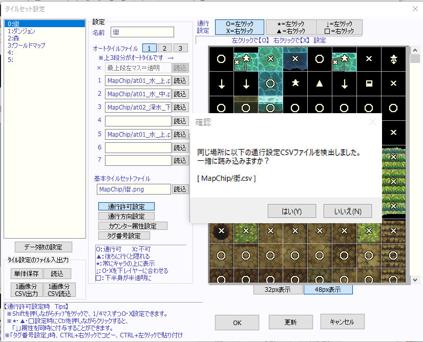
タイル画像を通行設定付きで配布したい人に朗報！
前述の通行設定CSVは、「同じファイル名のタイル画像を読み込むとき」に
自動で読み込むか聞いてくれます！ 便利。
- タイル部の操作追加
→ ホイール回転でスクロール可能に
→ 中クリック押しの上下ドラッグでスクロール可能に
タイル設定画面のタイル部分を操作してるときに
「なんでこの操作ないんだよぉぉぉ！！」ってなったので入れました。
実装されるのが遅すぎた感がありますがだいぶテンポ良くなります。
- 「タイル表示部分」に通行設定CSVをドラッグするとそこに通行設定を読込可！
「パーツ画像＆パーツの通行設定CSVで公開」みたいな配布方法も可！
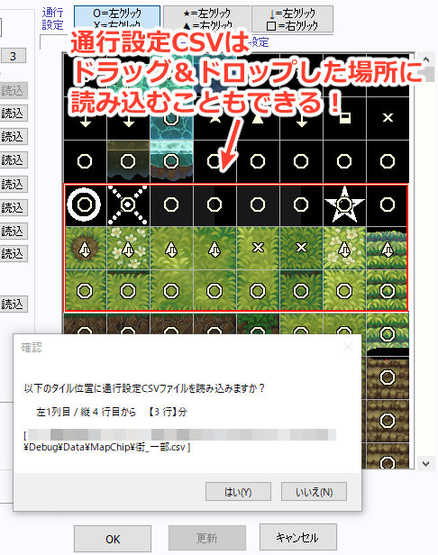
ドラッグ＆ドロップするだけで一定範囲の通行設定ができるので
3～4行分のパーツ単位でマップを配っている人にとっても、
CSVと一緒に配布すれば通行設定のデフォルト値が簡単に設定できて安心！
（試しに買ってみたタイル画像集がそういうパーツ配布型でしたが、
当然ながらバラだと通行設定データは作れないのでこれ↑ができると嬉しいかも？）
- 縦32000ピクセルまでのチップが使用可能に！
環境によって限界値は変わるかもしれませんが
ツール側としては高さ30000ピクセルのPNGファイルを
読み込んで表示することができました。
画像編集ツールによっては最大が30000ピクセルだったりするみたいなので、
事実上のほぼ無制限とみていい気がします。
なお、なぜ30000pxまでの画像しか作れないのに
推定の限界値が32000だと分かったかというというと、
16サイズのタイルの限界が高さ16000までだったからです。
（内部的に2倍して表示しているため、それで32000を超えられる）
【課題！】
●マップ編集時、1/8モードかつチップ量が画面内に多いとスクロールが重い！
→ ほとんどの処理は軽くなるのですがスクロールだけが重いです。
この辺りはもっと最適化しないといけなさそうです。
Copyright © SmokingWOLF / Silver Second
 カテゴリ: ウディタ
カテゴリ: ウディタ カテゴリ: ウディタ
カテゴリ: ウディタ